Unofficial study solution; not an official GTU answer key. Answers have not been independently verified. English text reflows; source equations, diagrams and Gujarati retain their original appearance. Use Enlarge image to inspect them.
This supplied solution is English only; switching the site language does not translate its answers.
Coverage: All 14 MCQs and all three choices in each of the eight “attempt any two” sections are worked: 38 items in total. In the exam, follow the printed choice instructions.
Notation: Semicolons in a determinant separate its rows. Bold letters denote vectors. Angles in standard trigonometric limits are in radians. Inverse cotangent uses the principal range (0, π).
Question wording: The authentic printed English is retained; mathematical typesetting and line breaks are normalised. Summer Q4 (B) 2 gives the acute supplementary angle instead of the directed-vector angle; Q5 (B) 3 gives a point not on the circle. Q5 (B) 1 omits the comma in its centre.
Source: the owner-supplied Summer 2026 question paper. These worked solutions are study material, not an official GTU answer key.
Question 1
Q1 · Multiple-choice questions (14 marks)
Q.1 (1) · |−1, 3; −4, 6| = ________ · 1 mark
Printed options: (A) −18 (B) 6 (C) −6 (D) 18
For a 2 × 2 determinant, multiply the main diagonal and subtract the other diagonal.
|−1, 3; −4, 6| = (−1)(6) − (3)(−4) = −6 + 12 = 6
Option (B): 6.
Q.1 (2) · If f(x) = log2x, then f(4) = _______ · 1 mark
Printed options: (A) 0 (B) 1 (C) 2 (D) 4
Substitute x = 4. Since 22 = 4, log24 = 2.
Option (C): 2.
Q.1 (3)If logx( ) = −2 then x = ________ · 1 mark · Open for the original formula and worked answer
Question
Worked solution
Convert the logarithmic equation into exponential form.
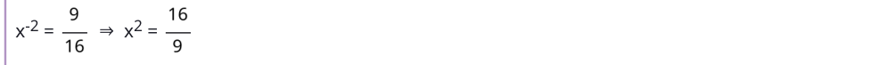
A logarithm base must be positive and not equal to 1, so take the positive root.
Q.1 (4) · |log213, −1; log217, 1| = ________ · 1 mark
Printed options: (A) 1 (B) −1 (C) 0 (D) 2
Determinant = log213 + log217 = log21(21) = 1.
Option (A): 1.
Q.1 (5) · 216° = _________ Radian · 1 mark
Q.1 (6) · tan−1x + cot−1x = _____. x ∈ R · 1 mark
complementary.
Q.1 (7) · Principal period of 2sinθ · cosθ = ________ · 1 mark
Option (A): π.
Q.1 (8) · If a = (2, 1, −1) and b = (1, −3, 2) then |2a − 3b| = ________ · 1 mark
Printed options: (A) √186 (B) √196 (C) √83 (D) 21
2a − 3b = (4, 2, −2) − (3, −9, 6) = (1, 11, −8).
Magnitude = √(12 + 112 + (−8)2) = √186.
Option (A): √186.
Q.1 (9) · If (1, −2, 3) · (4, 5, m) = 0 m = ________ · 1 mark
Printed options: (A) 2 (B) −2 (C) 3 (D) 0
4 − 10 + 3m = 0 ⇒ 3m = 6.
Option (A): m = 2.
Q.1 (10) · centre of the circle x2 + y2 − 2x + 4y + 1 = 0 · 1 mark
Printed options: (A) (1, 2) (B) (1, −2) (C) (−1, −2) (D) (−1, 2)
(x − 1)2 + (y + 2)2 = 4.
Compare with (x − h)2 + (y − k)2 = r2.
Option (B): centre (1, −2).
Q.1 (11) · slope of the line l: 2x − 5y + 3 = 0 is = ______ · 1 mark
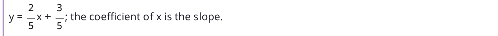
Q.1 (12)lim as x → 2 of = _________ · 1 mark · Open for the original formula and worked answer
Question
Worked solution
Printed options: (A) 80 (B) 160 (C) 40 (D) 0
Factor the difference of fifth powers and cancel x − 2 before taking the limit.
x5 − 32 = (x − 2)(x4 + 2x3 + 4x2 + 8x + 16).
At x = 2, the remaining sum is 16 + 16 + 16 + 16 + 16 = 80.
Option (A): 80.
Q.1 (13)lim as θ → 0 of = ________ · 1 mark · Open for the original formula and worked answer
Question
Worked solution
Q.1 (14)lim as h → 0 of = ______ · 1 mark · Open for the original formula and worked answer
Question
Worked solution
Printed options: (A) logea (B) e (C) a (D) 0
For a > 0, ah = eh ln a. Use the standard exponential limit.
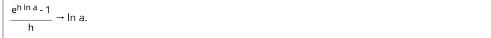
Option (A): logea = ln a.
Question 2
Q2 (A) · Attempt any two · 3 marks each
Q.2 (A) 1 · If |x, 4, 4; 4, x, 4; 4, 4, 0| = 0 then find value of · 3 marks
Expand the determinant along its first row; rows are separated by semicolons.
D = x(−16) − 4(−16) + 4(16 − 4x).
D = 128 − 32x. Set D = 0: 32x = 128.
x = 4.
Check: at x = 4 the first and second rows are identical, so the determinant is 0.
Q.2 (A) 2Prove that + + = 3 · 3 marks · Open for the original formula and worked answer
Question
Worked solution
Use the reciprocal law: the reciprocal of logab is logba.
LHS = log1224 + log128 + log129.
LHS = log12(24 × 8 × 9) = log121728.
Since 1728 = 123, the sum is 3.
LHS = 3 = RHS.
Q.2 (A) 3 · Prove that tan35° + tan10° + tan35° · tan10° = 1 · 3 marks
Since 35° + 10° = 45°, use the tangent addition formula.
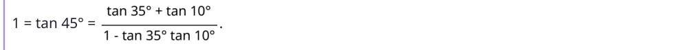
1 − tan 35° tan 10° = tan 35° + tan 10°.
tan 35° + tan 10° + tan 35° tan 10° = 1.
Q2 (B) · Attempt any two · 4 marks each
Q.2 (B) 1If f(x) = then prove that (i) f(x) + f( ) = 0 (ii) f(x) − f( ) = 2f(x) · 4 marks · Open for the original formula and worked answer
Question
Worked solution
Both expressions require x ≠ 0 and x ≠ −1. Substitute the reciprocal into the definition.
After substitution, multiply the numerator and denominator by x.
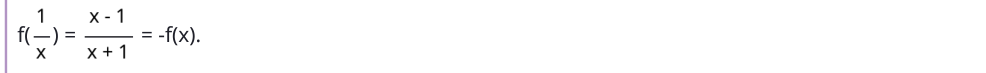
For (i), add f(x) and −f(x). For (ii), subtract −f(x) from f(x).
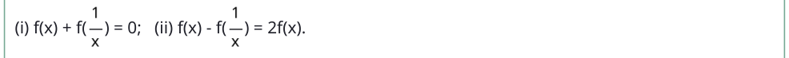
Q.2 (B) 2If log(x − y) = log 2 + log x + log y then prove that (i) x2 + y2 = 6xy (ii) + = 6 · 4 marks · Open for the original formula and worked answer
Question
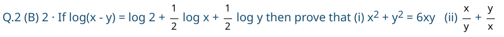
= 6 · 4 marks
Worked solution
The logarithms require x > y > 0. Combine the logarithms on the right.
log(x − y) = log(2√(xy)) ⇒ x − y = 2√(xy).
Square both sides: x2 − 2xy + y2 = 4xy.
Thus x2 + y2 = 6xy. Divide by xy, which is positive.
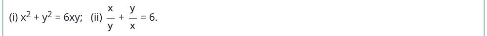
Q.2 (B) 3If = = then prove that (i) xyz = 1 (ii) xa · yb · zc = 1 · 4 marks · Open for the original formula and worked answer
Question
Worked solution
Let the common value be k. For the given fractions to exist, their denominators are nonzero; x, y and z are positive.
log x = k(b − c), log y = k(c − a), log z = k(a − b).
log(xyz) = k[(b − c) + (c − a) + (a − b)] = 0.
Hence xyz = 1. For the second result, multiply the three equations by a, b and c respectively and add.
log(xaybzc) = k[a(b − c) + b(c − a) + c(a − b)] = 0.
(i) xyz = 1; (ii) xaybzc = 1.
Question 3
Q3 (A) · Attempt any two · 3 marks each
Q.3 (A) 1Prove that + + = 3 · 3 marks · Open for the original formula and worked answer
Question
Worked solution
Use the allied-angle identities below, wherever the original expressions are defined.
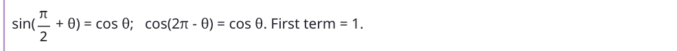
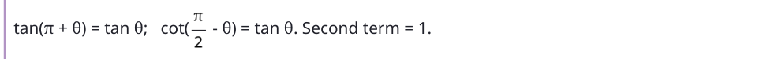
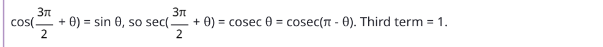
LHS = 1 + 1 + 1 = 3 = RHS.
Validity: sin θ and cos θ must both be nonzero.
Q.3 (A) 2Prove that = cot 3θ · 3 marks · Open for the original formula and worked answer
Question
Worked solution
Pair the first and third terms using the sum-to-product identities.
cos θ + cos 5θ = 2 cos 3θ cos 2θ.
sin θ + sin 5θ = 2 sin 3θ cos 2θ.
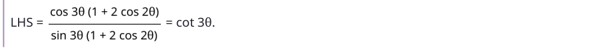
LHS = cot 3θ = RHS.
Validity: the original denominator must be nonzero; only then may the common factor be cancelled.
Q.3 (A) 3 · Prove that lines l1: 3x − 2y + 5 = 0 and l2: 2x + 3y − 7 = 0 are perpendicular to each other · 3 marks
Rewrite each line in slope-intercept form.
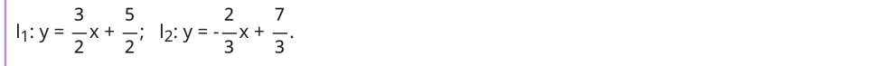
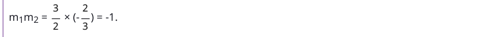
The two lines are perpendicular.
Q3 (B) · Attempt any two · 4 marks each
Q.3 (B) 1 · Prove that 8cos(20°) cos(40°) cos(80°) = 1 · 4 marks
Repeatedly use sin 2A = 2 sin A cos A. Start with sin 20°, which is nonzero.
sin 40° = 2 sin 20° cos 20°.
sin 80° = 4 sin 20° cos 20° cos 40°.
sin 160° = 8 sin 20° cos 20° cos 40° cos 80°.
But sin 160° = sin 20°. Divide both sides by sin 20°.
8 cos 20° cos 40° cos 80° = 1.
Q.3 (B) 2draw the graph y = cos x, − ≤ x ≤ · 4 marks · Open for the original formula and worked answer
Question
Worked solution
Mark x in radians. Calculate points at the two ends, at x = 0, and at two intermediate positions.
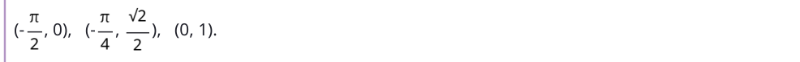
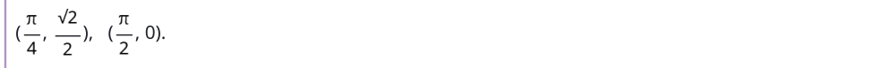
Plot the points and join them smoothly. Cosine is even, so the two halves are mirror images about the y-axis.
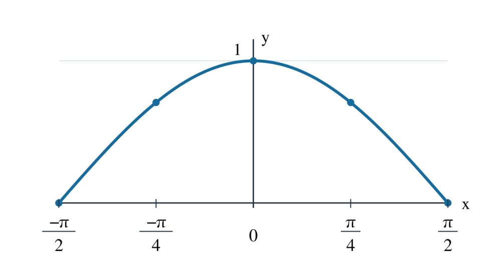
Cosine curve: y = 0 at both interval endpoints; the highest point is (0, 1).
The required curve starts at 0, rises to 1 at x = 0, and returns to 0.
Q.3 (B) 3 · If a = 2i − j, b = i + 3j − 2k then find |(a + b) × (a − b)| · 4 marks
Write a = (2, −1, 0), b = (1, 3, −2).
a + b = (3, 2, −2); a − b = (1, −4, 2).
(a + b) × (a − b) = (−4, −8, −14).
Magnitude = √(16 + 64 + 196) = √276 = 2√69.
Required magnitude = 2√69.
Check: the cross product is also −2(a × b).
Question 4
Q4 (A) · Attempt any two · 3 marks each
Q.4 (A) 1 · If a = i + 2j + k, b = 2i − 3j + k and c = −2i − j + 5k then find |2a + 3b − c| · 3 marks
2a = (2, 4, 2), 3b = (6, −9, 3), −c = (2, 1, −5).
2a + 3b − c = (10, −4, 0).
Magnitude = √(100 + 16 + 0) = √116.
|2a + 3b − c| = 2√29.
Q.4 (A) 2 · For what value of P, the vectors 2i + 3j − 5k and pi + j + 3k are perpendicular to each other · 3 marks
Perpendicular vectors have dot product zero.
(2, 3, −5) · (p, 1, 3) = 2p + 3 − 15 = 0.
2p = 12.
p = 6.
Check: 12 + 3 − 15 = 0.
Q.4 (A) 3 · Prove that the points (1, 0), (−1, 2), (0, 1) are collinear · 3 marks
All three points satisfy the same straight-line equation x + y = 1.
1 + 0 = 1; −1 + 2 = 1; 0 + 1 = 1.
The points lie on x + y = 1, so they are collinear.
Q4 (B) · Attempt any two · 4 marks each
Q.4 (B) 1 · A particle moves from (−1, 2, 1) to (2, 3, −1) under the effect of the constant force (1, 2, 1) and (2, −1, 0), Find the work done · 4 marks
Displacement is final position minus initial position; the net force is the sum of the two constant forces.
s = (2, 3, −1) − (−1, 2, 1) = (3, 1, −2).
F = (1, 2, 1) + (2, −1, 0) = (3, 1, 1).
Work W = F · s = 3(3) + 1(1) + 1(−2) = 8.
Work done = 8 work units (8 J if forces are in N and positions in m).
Check: the two forces do 3 and 5 work units separately; their sum is 8.
Q.4 (B) 2Prove that the angle between the vectors (1, 1, −1) and (2, −2, 1) is sin−1√( ) · 4 marks · Open for the original formula and worked answer
Question
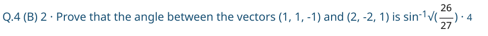
marks
Worked solution
Important: the printed claim gives the acute supplementary angle, not the standard angle between these directed vectors.
a · b = 2 − 2 − 1 = −1; |a| = √3, |b| = 3.
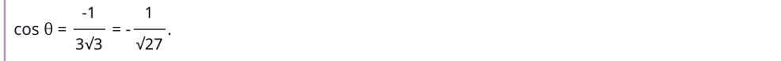
The dot product is negative, so θ is obtuse. The cross-product or identity sin2θ = 1 − cos2θ gives sin θ
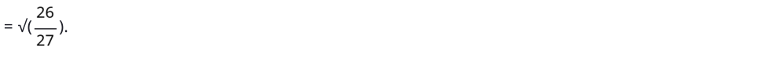
Check: α ≈ 78.90° and is the acute angle between the corresponding undirected lines; α + θ = 180°.
Q.4 (B) 3Evaluate: lim as x → 2 of · 4 marks · Open for the original formula and worked answer
Question
Worked solution
Both numerator and denominator tend to zero. Factor out x − 2.
x3 − 3x2 + 5x − 6 = (x − 2)(x2 − x + 3).
x3 − 8 = (x − 2)(x2 + 2x + 4).
Question 5
Q5 (A) · Attempt any two · 3 marks each
Q.5 (A) 1Evaluate: lim as x → 0 of · 3 marks · Open for the original formula and worked answer
Question
Worked solution
conjugate.
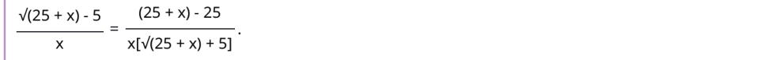
Q.5 (A) 2 · Evaluate: lim as n → ∞ (√(n2 + n + 1) − n) · 3 marks
Multiply by the conjugate; n is positive for sufficiently large n.
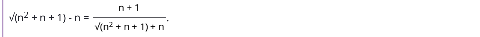
denominator is the square root below, plus 1.
As n → ∞ the numerator tends to 1 and the denominator to 2.
Q.5 (A) 3Evaluate: lim as x → 0 of · 3 marks · Open for the original formula and worked answer
Question
Worked solution
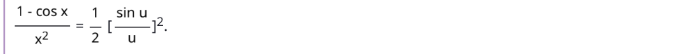
Q5 (B) · Attempt any two · 4 marks each
Q.5 (B) 1 · Find the equation of the circle having centre (3-1) and passing through (−1, 2) · 4 marks
Interpretation: the printed centre “(3-1)” is read as (3, −1), with the comma omitted; the other printed line confirms this ordered pair.
Centre C = (3, −1) and point P = (−1, 2). Find the squared radius using the distance formula.
r2 = (−1 − 3)2 + (2 + 1)2 = 16 + 9 = 25.
(x − 3)2 + (y + 1)2 = 25.
Circle: (x − 3)2 + (y + 1)2 = 25, or x2 + y2 − 6x + 2y − 15 = 0.
Check: substituting (−1, 2) gives 16 + 9 = 25.
Q.5 (B) 2 · Find the equation of a line passing through the point (−6, 2) and parallel to the line joining the points (−3, 1) and (−5, 2) · 4 marks
First calculate the slope of the line through the two given points.
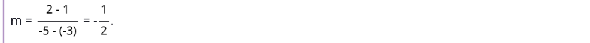
The required line is parallel, so it has the same slope. Use point-slope form at (−6, 2).
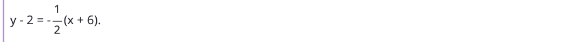
Required line: x + 2y + 2 = 0.
Q.5 (B) 3 · Find the equation of tangent and normal to the circle x2 + y2 − 4x + 2y + 3 = 0 at the point (−1, 2) · 4 marks
Check the point first: a tangent or normal “at” a point on a circle requires that point to lie on the circle.
At (−1, 2), x2 + y2 − 4x + 2y + 3 = 1 + 4 + 4 + 4 + 3 = 16 ≠ 0.
Completing squares gives (x − 2)2 + (y + 1)2 = 2.
The centre is (2, −1), the radius is √2, but the distance to (−1, 2) is √18 = 3√2. The point is outside the circle.
As printed, there is no tangent or normal at (−1, 2). A corrected point or a request for tangents through it is needed.
A tangent through an external point is a different question; it does not make that point the point of contact.
DiplomaOne · Mathematics-I DI01000021 · Summer 2026 · Compare with the original paper and your institute’s official guidance.